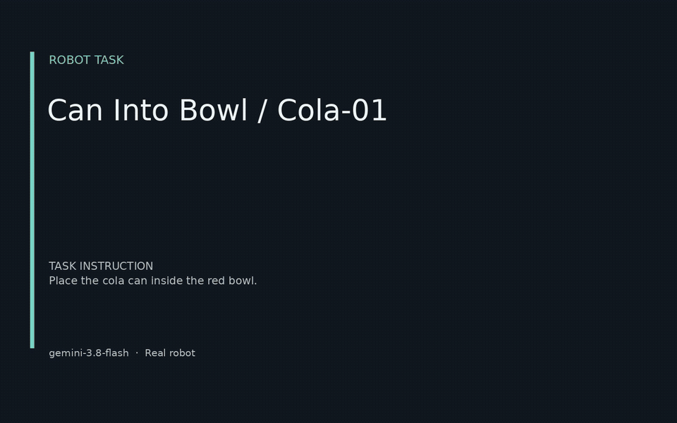

Foundation vision-language models recognize objects, interpret instructions, and reason about spatial relations. Yet a robot also needs to know where to move, how to orient its gripper, and whether an action actually worked. Inferring these details from RGB images alone leaves fundamental uncertainty about depth, contact, and 3D spatial relationships. We identify accessible perceptual evidence as the critical missing piece between VLM competence and manipulation capability.
Robo-Harness K1 exposes perception as tools. The agent queries calibrated depth, inspects visual anchors with persistent object identities, evaluates grasp hypotheses, and selects generic motions from the returned evidence. Visual reference lines overlay calibrated measurements onto the VLM's existing RGB views, making 3D object relations, orientations, and distances visible without a depth encoder. The K1 harness supplies calibrated spatial evidence, not task-specific pick/place primitives or hidden object poses. The VLM remains responsible for choosing the target, the motion, and the recovery strategy.
The same interface supports both frontier models without fine-tuning and training compact student models: tool-call traces naturally align with next-token prediction, so successful interactions become supervision for what to observe, what to measure, and which tool to call next.
In action
Successful demonstrations
Gemini with Robo-Harness K1, from physical manipulation to simulation. Current-view perception overlays show what the agent observed, alongside its function calls.
Real-robot manipulation
Physical Piper arm · Two external RGB-D cameras

Successful trial · 33 decisions
Can into bowl
Locate the can and bowl, approach and grasp the can, then place it inside the bowl and release. The GIF presents all recorded decision snapshots with current views and frame annotations.
Watch the full MP4 with playback controls
Decision snapshots; API waiting time omitted. Outcomes are assessed by operator confirmation and image review. Both methods request Gemini 3.7 Flash and share the Piper control adapter.
Locate the black bowl between the plate and the ramekin, then place it on the plate.
Object · Tools + execution
Ketchup into basket
Pick the target object and transfer it into the basket.
Goal · Tools + execution
Open the middle drawer
Ground the drawer handle and control contact while pulling the drawer open.
RoboSuite
Across robot arms
UR5e · Tools + execution
Nut assembly
Grasp the square nut, align it above the peg, and lower it into place.
IIWA · Tools + execution
Cube stacking
Pick up a cube and stack it on the other cube.
Dual Panda · Tools + execution
Two-arm lifting
Lift the pot with two arms. Native success requires the pot bottom to rise more than 10 cm above the table.
Decision observations pause briefly to show the recorded perception overlays and tool calls (key arguments shown). Motion segments retain every recorded control step at simulator speed; overlays are not carried onto changed views. Each clip ends with a two-second hold of the successful terminal state. API waiting time is omitted. Use fullscreen to read the annotations.
The method
Perception as Tools
K1 connects a vision-language model to calibrated perception, motion, and memory tools through the VLM's existing image-and-language interface. The agent selects what to measure, acts on the evidence, and observes what actually happened.
Ground regions, measure geometry, track visual anchors, and inspect grasp hypotheses in the existing camera views.
01
Ground and Measure
A text query returns labeled candidate regions with persistent identifiers for the agent to inspect. Calibrated depth queries and region geometry convert RGB-D observations into metric surface positions, principal directions, and relative displacements. Evidence is projected back into the existing external and wrist-camera views as visual reference lines. The agent reads 3D relations directly from annotated images without interpreting raw point clouds or depth arrays.
02
Act and Verify
The agent selects a grasp hypothesis or specifies a motion target. Generic tools control translation, rotation, and gripper opening at adaptive granularity: fine-grained bounded steps for precise alignment, and direct target moves for longer transits that reduce model calls and keep the context history clean. Every action reports achieved motion and residual error, so a requested pose is not confused with a completed movement.
03
Maintain Spatial Evidence
Each detected region receives a persistent identity anchor that survives across observations. Anchor tracking provides frame-to-frame correspondences lifted into world coordinates, separating apparent camera motion from actual surface displacement. Validity flags distinguish live measurements from uncertain or historical references. A sliding context window, searchable full history, and agent-maintained progress records carry information through longer episodes.
04
Train from Tool-Call Traces
Teacher interactions are filtered into executable next-tool-call examples, paired with the observations and tool evidence available at each decision. Qwen3.5-9B is fine-tuned with language-side LoRA and a frozen vision encoder. The student uses the same frozen harness at evaluation without a separate action head. Tool-call traces align directly with the VLM's native next-token prediction objective, enabling a training paradigm with better sample efficiency and generalization than action regression.
Measurements describe observed surfaces, not hidden geometry. Tracking can become uncertain, and a grasp candidate is a hypothesis, not a guarantee of collision-free motion or secure contact. Re-observation and execution feedback remain part of the control loop.
Experiments
Results
LIBERO-PRO
On 60 matched task–variant–state configurations, K1 raises Gemini 3.7 Flash from 16.7% to 71.7% and GPT-6 Astra from 63.3% to 93.3%. Gemini with K1 also surpasses RGB-only Astra. Both models gain most on Spatial: +70 percentage points for Gemini and +45 points for Astra.
Figure 1. Four matched systems: Spatial, Object, and Goal, ten tasks each, with swap and task variants at state 0. Hatched bars show published references with their own evaluation protocols. The comparison evaluates the complete K1 interface, including perception, memory, motion tools, and completion feedback.
Matched LIBERO-PRO comparison · 60 cases per system
Model
RGB-only
K1
Gain
Gemini 3.7 Flash
10/60 · 16.7%
43/60 · 71.7%
+55.0 pp
GPT-6 Astra
38/60 · 63.3%
56/60 · 93.3%
+30.0 pp
The full Gemini + K1 sweep spans three initial states and achieves 139/180 (77.2%); it includes the 60 paired cases above.
Agentic Post-Training
Before fine-tuning, Qwen3.5-9B with K1 scores 0% on A, B, and C. Training on 107 teacher episodes develops effective tool-use behavior: at epoch 5 it reaches 51.2% on training-matched configurations (A), 44.2% on new initial states (B), and 13.9% on held-out task conditions (C), versus OpenVLA's 20.9%, 30.2%, and 0.0% respectively.
All methods share the same 107 source episodes. A and B each contain 43 cases; C contains 36. B evaluates new initial states of seen conditions; C holds out entire task conditions from fine-tuning.
Learning across environments
Continuing the LIBERO-trained agent on 316 successful trajectories from LIBERO-PRO, RoboSuite, RoboCasa, and RoboTwin improves generalization in its original domain and performance on RoboSuite. The model retains the same tool-call prediction objective.
Mixed-environment post-training · separate before/after evaluation
Evaluation
Before
After
LIBERO-PRO B · New initial states
18/42 · 42.9%
22/42 · 52.4%
LIBERO-PRO C · Held-out conditions
4/36 · 11.1%
10/36 · 27.8%
RoboSuite
17/60 · 28.3%
30/60 · 50.0%
RoboCasa
4/48 · 8.3%
2/48 · 4.2%
RoboTwin
1/39 · 2.6%
1/40 · 2.5%
Three additional LoRA epochs from the LIBERO epoch-3 checkpoint. Before-training scores come from a fresh evaluation. Source-domain generalization improves while RoboCasa and RoboTwin remain challenging.
RoboSuite Transfer
Gemini with K1 transfers to RoboSuite without any target-environment fine-tuning. On the four shared tasks (cube lifting, restacking, stacking, and nut assembly):
90.0%Panda
88.8%UR5e
86.2%IIWA
The small spread across arms supports separating decisions from actuation: the agent reasons about measured geometry, while embodiment-specific adapters control each arm. All arms use PandaGripper to isolate changes in arm kinematics. The broader Panda evaluation includes wiping and two-arm tasks, reaching 72.1% overall. Two-arm lifting reaches 75.0%, while handover reaches only 5.0%, exposing coordination limits beyond geometric target-reaching.
RoboTwin and RoboCasa Transfer
The same tool interface extends to Aloha AgileX dual arms in RoboTwin and PandaOmron mobile manipulation in RoboCasa, using Gemini without target-environment model fine-tuning.
Transfer to bimanual and mobile manipulation
Environment
Setting
Success
RoboTwin Easy
10 tasks · task-macro average
32.0%
RoboTwin Hard
Same tasks · randomized conditions
28.0%
RoboCasa
24 kitchen tasks × 10 initial states
53/240 · 22.1%
RoboTwin Hard varies lighting, textures, clutter, and table height; K1's task-macro success drops by 4 points. RoboCasa adds base translation, base rotation, and torso-height control. Counter-to-sink placement reaches 80%, while microwave activation and coffee-machine button pressing remain unsolved.